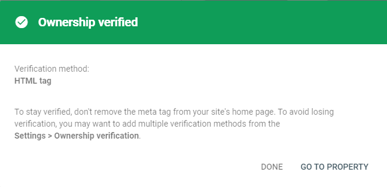
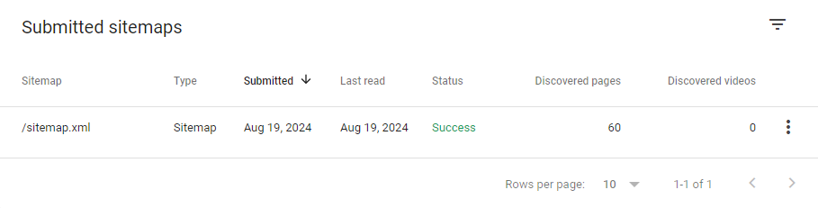
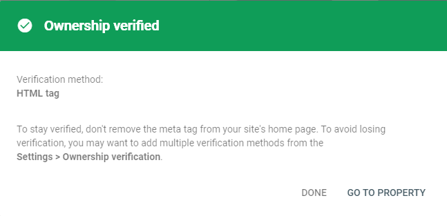
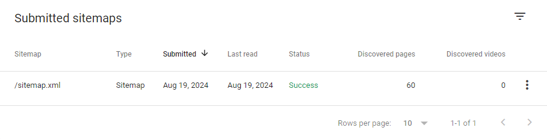

Sitemap (sitemap.xml)A sitemap is an XML document that sits at the root of your
website
and lists all its pages.
A sitemap is an XML document that sits at the root of your website and lists all its pages.
Its purpose is to provide search engines with additional information about your pages, such
as how often they are updated and their relative importance to other pages on your
site.
Create a sitemap.xml file for your site. This can be done manually or via online
tools.
I created my own here...
'cause: python-angular-sitemapper This tool is a Python script that crawls a website and
generates a sitemap.xml file based on
the structure of Angular sites. It contains a settings.json file that can be
customized
to
support overrides such as changing the changefreq or priority of certain
pages. If you use Angular, it's a quick way to update your sitemap as you
make
changes. Try it!
Update your server to serve it. For C# Core, this can be done via app.UseStaticFiles();
Ensure it's going to be published along with the website. Many frameworks such as
Angular will not include files unless explicitly told to.
e.g.
angular.json
"assets": [
"src/favicon.ico",
"src/sitemap.xml" // arrow_back Add this line
],
Place the sitemap.xml file to the root of your website.
That's it. The file will be crawled by search engines and your site will be indexed. If you
wish to speed up the process, you can submit the sitemap to and Bing
Webmaster Tools.
robots.txtRobots.txt is a text file that tells search engines which pages
they can and cannot crawl.
Example robots.txt entry:
Verify your site

There are several ways to do this but I find
the easiest is to add a meta tag to your site's HTML. This can be done
via the HTML file or the <head> section of your
site's
HTML. The meta tag will look something like this:
<meta name="google-site-verification"
content="<VALUE PROVIDED BY GOOGLE>" />
Add sitemap by going to "Sitemaps" and clicking "Submit"
If the status is "Success," you're done!
You should see something like this with information on the number of pages scanned and indexed:

If the status is "Couldn't fetch," your
server is
either not set to serve the file or the file is not in the root of
your
site.
Check the "Coverage" report to see if there are any errors on your site.
Check the "Performance" report to see how your site is doing in search
results.
SEO in broad strokes..
Tools
I created my own here... 'cause: python-angular-sitemapper
This tool is a Python script that crawls a website and generates a sitemap.xml file based on the structure of Angular sites. It contains a settings.json file that can be customized to support overrides such as changing the changefreq or priority of certain pages. If you use Angular, it's a quick way to update your sitemap as you make changes. Try it!
e.g.
angular.json
"assets": [ "src/favicon.ico", "src/sitemap.xml" //arrow_back Add this line
],
Example sitemap.xml:
<?xml version="1.0" encoding="UTF-8"?> <urlset xmlns="http://www.sitemaps.org/schemas/sitemap/0.9"> <url> <loc>https://www.nehsa.com/</loc> <lastmod>2024-08-19</lastmod> <changefreq>monthly</changefreq> <priority>1.0</priority> </url> </urlset>That's it. The file will be crawled by search engines and your site will be indexed. If you wish to speed up the process, you can submit the sitemap to and Bing Webmaster Tools.
User-agent: * Sitemap: https://www.example.com/sitemap.xml There are several ways to do this but I find the easiest is to add a meta tag to your site's HTML. This can be done via the HTML file or the
<head>section of your site's HTML. The meta tag will look something like this:<meta name="google-site-verification" content="<VALUE PROVIDED BY GOOGLE>" />You should see something like this with information on the number of pages scanned and indexed:
